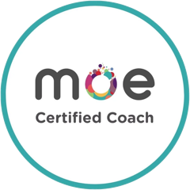

The work has become a verdict on who you are.
About A Creative Block
A Creative Block exists because creative struggle is too often treated as personal failure. People are told to be more disciplined, confident or playful, even when the real friction sits in identity, working conditions, exhaustion, isolation, unclear direction or the work itself. We believe creative exploration and work deserve more curiosity, less shame, and a safe place to speak openly—whether you’re brainstorming a project, figuring out what isn’t working, or talking about the struggles that come with being creative or producing a creative project. Our mission is to help people and teams understand why the work has stopped moving, find support that fits and keep making without having to become someone else first.
The version of “creative” you inherited does not fit.
The brief, pace or environment works against the work.
You need another mind, useful feedback or real support.
Why we exist
The block is rarely about the work.
Most advice says to start badly, play more or push through. Sometimes that is exactly right. Sometimes the project needs a clearer process, a boundary, recovery or better working conditions.
The useful question is not “what is wrong with me?” but “what is keeping this stuck now?”
Too many people leave meaningful work while specific support remains surprisingly thin. That gap is why we are here.
What the block shows
A creative block is not a diagnosis, an identity or proof that creativity has gone. It is the visible point where something underneath—fear, isolation, exhaustion, unclear direction, working conditions or the work itself—has interrupted a project. We want creative people and their work to thrive, so we support more than output: sometimes the next move is practical, sometimes emotional, and often it is both. The aim is not to grind the work into existence, but to create the conditions in which it can emerge.


My story
For fifteen years, the search kept looking in the wrong direction. A Creative Block grew from Mirco’s long attempt to become the kind of creative he thought he should be. Product design became graphic design, then music, photography, documentary, writing, apps and more systems for finding the answer. The work changed; the feeling that something was missing did not.
Identity fusion kept the search going: the work did not simply need to succeed; it seemed to prove whether he was creative at all. When output and self-worth become fused, changing direction can feel like losing part of yourself.
The turn came from dropping the question “what should I become?” and noticing what was already consistent: people brought him their unfinished projects, difficult decisions and tangled ideas. He could see patterns, make a room feel safe and help another person find a way through.
The block was not a lack of creativity. It was a narrow definition of where creativity was allowed to live.
What we believe
A few things we will not ask you to pretend.
Good support makes the situation clearer without turning the block into a character flaw.
You do not have to fit the creative costume.
Your block deserves an investigation, not a slogan.
Nobody has to unblock alone.
Your brain is not broken; the system might be.
You will be supported, not shamed.
Where we are going
Today, A Creative Block brings coaching and consulting together around the person, the project and the conditions shaping both. The longer-term ambition is a trusted network of coaches, therapists and specialist consultants—and a place that takes mental health in the creative field seriously while helping creatives move meaningful work forward when it gets stuck.